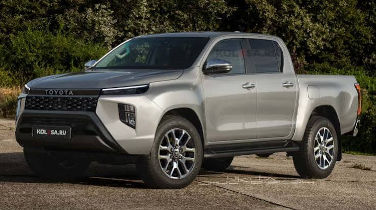

O Mundo Automotivo
Os automóveis revolucionaram a forma como a humanidade se locomove, conecta e vive. Desde a invenção do primeiro carro motorizado até a era dos veículos elétricos e autônomos, poucas empresas deixaram uma marca tão profunda e duradoura na indústria automotiva quanto a Toyota.
A História da Toyota
Surpreendentemente, a história da Toyota não começou com carros, mas com teares têxteis. A trajetória da marca é um exemplo global de resiliência, inovação e busca pela perfeição (conceito conhecido como Kaizen - melhoria contínua).
- 1926 - As Origens Têxteis: Sakichi Toyoda inventa o tear automático e funda a Toyoda Automatic Loom Works.
- 1933 - A Divisão Automotiva: Kiichiro Toyoda, filho do fundador, viaja para a Europa e EUA e decide criar uma divisão automotiva na empresa da família.
- 1937 - Fundação Oficial: É fundada a Toyota Motor Corporation. O nome foi alterado de "Toyoda" para "Toyota" porque exigia apenas 8 traços na escrita japonesa (o 8 é um número de sorte na cultura local).
- Década de 1950 - O Sistema TPS: Taiichi Ohno desenvolve o Sistema Toyota de Produção (TPS), popularizando o conceito de "Just-in-Time", reduzindo desperdícios e definindo o padrão para a indústria mundial.
- 1966 - Lançamento do Corolla: O modelo que viria a se tornar o carro mais vendido da história da humanidade é lançado.
- 1997 - A Revolução Híbrida: A Toyota lança o Prius, o primeiro carro híbrido produzido em massa do mundo.
Modelos Icônicos da Toyota
Conheça alguns dos veículos que moldaram a reputação de confiabilidade e desempenho da marca. Clique em um modelo para ver todas as informações detalhadas:

Toyota Corolla
Lançado em 1966, é o carro mais vendido do mundo, reconhecido por sua durabilidade e conforto.
Ver detalhes →
Toyota Hilux
Lendária por sua resistência extrema, tornou-se o padrão mundial de picape robusta.
Ver detalhes →
Toyota Prius
Pioneiro na tecnologia híbrida, pavimentou o caminho para a eletrificação dos carros modernos.
Ver detalhes →.jpg)
Toyota Supra
Um ícone dos esportivos das décadas de 80 e 90, cultuado por entusiastas do automobilismo no mundo todo.
Ver detalhes →O Futuro e a Inovação
Hoje, a Toyota continua liderando a mobilidade global. A empresa está investindo fortemente no desenvolvimento de veículos elétricos a bateria, motores a hidrogênio (como o Toyota Mirai) e na criação de cidades inteligentes voltadas para a mobilidade do futuro, como o projeto Woven City no Japão.